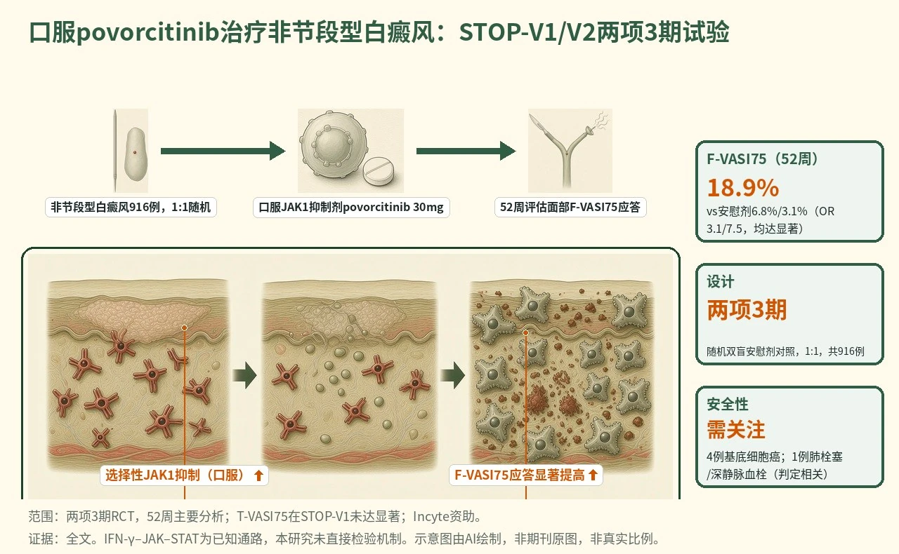

口服JAK1抑制剂povorcitinib治疗白癜风：两项3期试验达到主要终点
STOP-V1和STOP-V2两项随机、双盲、安慰剂对照3期试验共纳入916例中重度非节段型白癜风成人患者，评估口服povorcitinib的疗效。两项试验均达到主要终点F-VASI75，治疗组总体安全性与安慰剂相近。

- 两项3期试验共916例患者（1:1随机）
- 口服povorcitinib 30 mg每日一次
- 主要终点F-VASI75达成
- 52周总体不良事件率与安慰剂相近
示意图示意JAK1抑制剂povorcitinib阻断IFN-γ信号通路，从而减少黑素细胞破坏的可能机制（本研究未直接检验机制）。
研究背景与待解问题
白癜风是一种自身免疫性皮肤病，表现为皮肤色素脱失。IFN-γ-JAK-STAT通路在黑素细胞破坏中起关键作用。JAK抑制剂已被证实在白癜风中有效（如ruxolitinib外用制剂）。
本研究要回答的问题是：口服JAK1抑制剂povorcitinib能否改善中重度非节段型白癜风患者的面部色素恢复？
研究设计
STOP-V1和STOP-V2是两项设计相似的随机、双盲、安慰剂对照3期试验。入组中重度非节段型白癜风成人患者（面部和身体均有累及）。
患者按1:1随机分配接受povorcitinib 30 mg每日一次或安慰剂，共52周。主要终点为52周时面部白癜风面积评分指数（F-VASI）至少75%改善的患者比例。
核心结果
疗效
两项试验均达到主要终点：
| 试验 | povorcitinib | 安慰剂 | P值 |
|------|-------------|--------|-----|
| STOP-V1 | 18.9% | 6.8% | 0.0003 |
| STOP-V2 | 18.9% | 3.1% | <0.0001 |
虽然达到统计学显著性，但绝对应答率约19%意味着多数患者未达到F-VASI75标准。
安全性
治疗组与安慰剂组的总体治疗期不良事件发生率相近。povorcitinib组最常见的不良事件为：
- 鼻咽炎
- 痤疮
- 上呼吸道感染
未见主要心血管不良事件、结核或死亡；povorcitinib组出现4例基底细胞癌和1例肺栓塞/深静脉血栓（判定与药物相关并停药）。JAK类特殊关注事件总体少见，罕见风险仍需更长期数据评估。
机制解读
论文所证实的： 口服povorcitinib 30 mg在两项3期试验中均显著提高面部F-VASI75应答率；IFN-γ–JAK–STAT为已知的作用通路，但本研究未直接检验机制。
需要进一步验证的： 长期疗效和安全性、停药后复发率、与外用ruxolitinib的比较或联合应用、以及在不同严重程度和部位患者中的疗效差异。
局限与不确定
- 虽然达到统计学显著性，但绝对应答率（约19%）提示多数患者未达F-VASI75，临床意义需评估。
- 52周的随访期限制了对长期疗效和安全性的评估。
- JAK抑制剂类效应（如感染、血栓、恶性肿瘤等罕见风险）需更大规模和更长期数据。
- 未与现有标准治疗（如窄谱UVB、外用JAK抑制剂）进行头对头比较。
临床/产业意义
该研究为口服JAK1抑制剂治疗白癜风提供了积极的注册级别数据。考虑到白癜风患者对系统性治疗的需求，povorcitinib若获批将为口服系统治疗提供新选项。但需要权衡口服用药的便利性与潜在的全身性安全风险（如本研究中观察到的肺栓塞/深静脉血栓和基底细胞癌病例）。